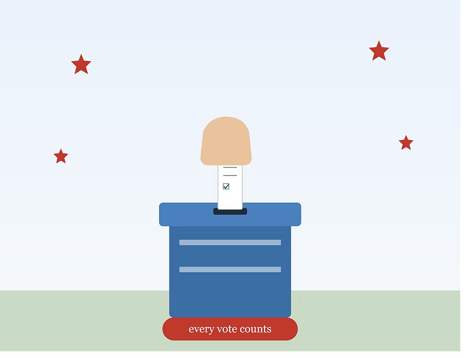

The Importance of Voting and Making Your Voice Heard
As a former refugee, now a citizen of the United States, I have the privilege and duty of electing a president who influencing public policy. Participation in the political process affects our communities and nation today and in the future. I urge many citizens to be active citizens by registering and then regularly exercising their right to vote.
I also urge many citizens to spend the time needed to become informed about the issues and candidates that they will be considered as votes. I urge them by making videos about candidate visions and why they should vote that candidate and that candidate might be you. I know Trump is doing better, but we need the better candidate. The candidate that follows the rule of law. I know Trump is doing good at what he fought for it. Whether Trump is doing good or bad, he is the president and might be in 2020 unless we the people vote him out. I cannot tell Trump is bad, but people who vote him are also not bad, but we the teens are bad that we did not vote for the last election. This 2020 election, I am sure teens will vote more and that vote might go to you. Let's hope that. Lastly, I urge citizens to seek out and then uphold leaders who will act with integrity and are wise, good, and honest. As a first-time voter in Presidential Election, I am seeking to vote someone who has similar ideas as mine. Ideas about climate change, health care, minimum wages and many. Can you please tell me what are your visions of a better America and the reason why you are voting for your candidates ? Note in mind that one vote might make it different. One Vote might take out Trump and make your president. Or your candidate might be Trump and your vote might make him president once again.

Like & comment
Tap 👍 to like this post and join the conversation below. Commenting needs a free GitHub account.